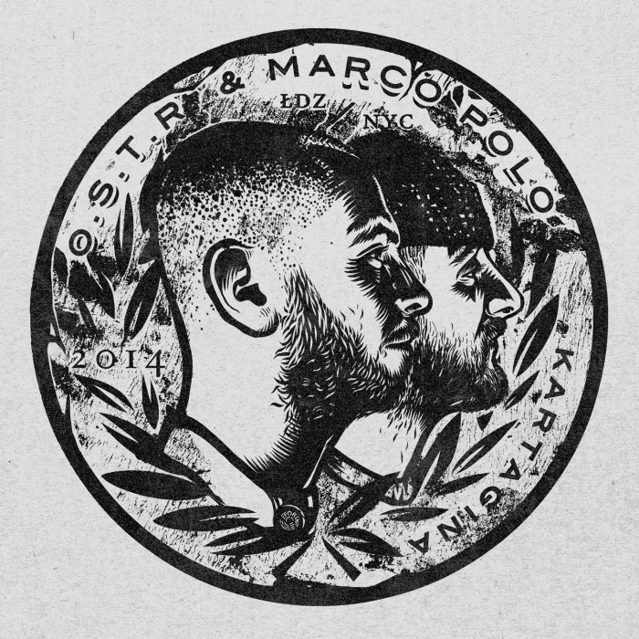

Dyskografia O.S.T.R
 Saturator
Saturator
Masz to jak w banku
30 minut z życia
Tabasko
Jazz w wolnych chwilach
Jazzurekcja
 Szum rodzi hałas
Szum rodzi hałas
7
Hollyłódź
Ja tu tylko sprzątam
Jazzurekcja Addendum
O.C.B
Złodzieje zapalniczek
Tylko dla dorosłych
Jazz, dwa, trzy
Ostatnia szansa tego rapu
HAOS

Kartagina
Podróż zwana życiem
Życie po śmierci
MTC: Unplugged Autentycznie
W drodze po szczęście
Instrukcja obsługi świrów
 Arhytmogenic EP
Arhytmogenic EP
GNIEW